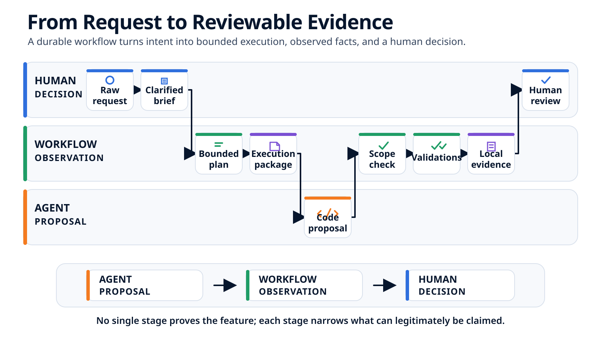

Du brief à la revue locale : une feature agentique de bout en bout¶
À 9 h 12, « ajouter une pagination serveur » est encore une demande. À 10 h, cinq fichiers ont changé, une tentative a échoué, une reprise bornée a réussi et une revue locale est prête. Suivons chaque transformation entre ces deux moments.
Dans l'article précédent, la pagination serveur de l'annuaire clients a été classée comme fonctionnalité structurée suivant un parcours orchestré. La taille de page est fixée à 25, une page invalide renvoie HTTP 404 avec le code pagination_page_invalide, et la synchronisation URL reste un non-objectif.
Ces décisions sont maintenant prises. Cet article part de cette fiche et suit la feature à travers la planification, l'implémentation, une validation en échec, une reprise et la revue locale.
L'objectif n'est pas de reproduire un outil particulier. Il est de rendre les passages de relais visibles. À chaque étape, nous poserons les trois mêmes questions :
- qu'est-ce qui entre dans l'étape ;
- quelle sortie durable produit-elle ;
- qu'est-ce que cette sortie permet — ou ne permet pas — d'affirmer ?
L'agent propose et modifie. Le workflow observe et consigne. Un humain décide si les faits obtenus suffisent.
9 h 12 — Partir de la décision, pas de la demande brute¶
La demande brute reste utile :
Ajouter une pagination serveur à l'annuaire clients.
Mais elle n'est plus la seule entrée. La fiche de décision de l'article précédent ajoute les choix que l'agent ne doit pas réinventer :
Mode : fonctionnalité structurée
Parcours : orchestré
Décisions :
- première page : 1 ;
- taille de page : 25 éléments ;
- page invalide : HTTP 404, code pagination_page_invalide ;
- état de la page : local à la feature.
Non-objectifs :
- synchroniser la page dans l'URL ;
- modifier une primitive partagée ;
- ajouter une dépendance ;
- migrer ou restructurer les données.
Responsables :
- responsable de la feature ;
- propriétaire de l'API.
Cette fiche ne dit pas comment modifier le code. Elle dit quelles décisions produit et de gouvernance ont déjà été prises. Si la synchronisation URL redevient obligatoire, la feature doit s'arrêter et revenir vers le responsable compétent au lieu de modifier silencieusement shared/routing/**.
9 h 20 — Transformer la décision en brief observable¶
Le brief traduit maintenant ces décisions en comportements relisibles :
## Objectif
Paginer côté serveur l'annuaire clients et permettre à l'utilisateur
de naviguer entre les pages depuis l'interface.
## Résultats observables
- GET /api/customers?page=2 renvoie items, page et total ;
- l'annuaire charge la page 1 à l'ouverture ;
- Précédent est désactivé sur la page 1 ;
- Suivant est désactivé lorsque le total est atteint ;
- loading, empty et error restent des états distincts ;
- une page invalide renvoie HTTP 404 avec pagination_page_invalide.
## Périmètre d'écriture
- backend/customers/**
- frontend/customers/**
## Contexte en lecture seule
- docs/customers/pagination.md
- shared/ui/**
- shared/state/**
- shared/routing/**
## Arrêter si
- un consommateur existant exige un contrat incompatible ;
- une décision produit ou d'autorisation reste ouverte ;
- une primitive partagée, une dépendance ou une migration devient nécessaire ;
- l'un des non-objectifs ne peut pas être respecté.
Le brief nomme des comportements et des frontières, pas chaque édition. Il est assez précis pour être testé, tout en laissant à l'agent de code la possibilité d'explorer les zones autorisées et de planifier les détails de l'implémentation.
À ce stade, nous savons ce qui doit être vrai. Il nous faut encore des unités de travail exécutables.
9 h 28 — Découper la feature en trois tâches bornées¶
« Faire le backend, puis le frontend, puis tout tester » n'est pas encore un plan exécutable. Chaque tâche doit recevoir un résultat observable, des dépendances, des chemins modifiables et une validation.
| Tâche | Résultat observable | Dépend de | Fichiers modifiables | Validation déclarée |
|---|---|---|---|---|
| T-01 — Contrat API | Renvoyer items, page et total ; couvrir les limites et la convention 404 |
— | backend/customers/api.pybackend/customers/tests/test_pagination.py |
make test-back |
| T-02 — Interface | Envoyer la page demandée ; préserver les états existants ; respecter les limites de Précédent et Suivant | T-01 | frontend/customers/customer-api.tsfrontend/customers/customer-list.tsxfrontend/customers/customer-list.test.tsx |
make test-front |
| T-03 — Revue d'intégration | Comparer le consommateur frontend au contrat backend et confirmer qu'aucune synchronisation URL n'a été introduite | T-01, T-02 | Aucune écriture produit supplémentaire prévue | make build-front |
Ce découpage produit plusieurs effets utiles :
- T-02 ne peut pas inventer un contrat avant que T-01 l'ait stabilisé ;
- T-03 ne peut pas cacher une nouvelle implémentation dans une vague tâche « intégration » ;
- les cinq fichiers produit attendus sont visibles avant l'exécution ;
- chaque tâche possède un résultat distinct de « l'agent dit que c'est terminé ».
Les commandes sont des validations déclarées. Leur présence dans le plan ne signifie pas qu'elles ont été exécutées. Ce fait ne peut exister qu'après leur lancement, avec un code de retour et une sortie enregistrée.
La trace que nous allons produire¶
Le parcours complet possède maintenant une chronologie concrète.
| Heure | Transformation | Sortie durable |
|---|---|---|
| 9 h 12 | Qualifier la demande | Fiche de décision |
| 9 h 20 | Clarifier le comportement attendu | Brief de feature |
| 9 h 28 | Découper le travail | Plan et tâches T-01 à T-03 |
| 9 h 34 | Compiler le contexte exécutable | Paquet d'exécution du bloc de tâches |
| 9 h 43 | Lancer la première tentative | Résultat du runner, observations Git et validation en échec |
| 9 h 48 | Préparer une reprise bornée | Fiche de reprise liée à la tentative 001 |
| 9 h 54 | Lancer la seconde tentative | Validations ciblées réussies et preuve locale finale |
| 10 h | Rassembler les faits | Synthèse de revue locale |

9 h 34 — Compiler un bloc de tâches cohérent¶
T-01, T-02 et T-03 partagent le même contrat de pagination et forment une chaîne de dépendances. Elles peuvent donc être préparées comme un bloc cohérent pour une seule session du runner :
T-01 contrat backend
-> T-02 consommateur frontend
-> T-03 revue de cohérence
un seul chargement du contexte commun
un bloc de tâches ordonné
un résultat distinct exigé pour chaque tâche
Le paquet réunit deux niveaux :
- contexte commun : brief, décisions, règles du repository, matrice des frontières d'écriture et état Git de départ ;
- contexte de tâche : résultat attendu, dépendances, fichiers modifiables exacts, références en lecture seule, validation et conditions d'arrêt.
Juste avant le démarrage du runner, l'état local est enregistré :
branche : feature/customer-pagination
HEAD : 7a31c42
fichiers indexés : aucun
fichiers suivis non indexés : aucun
fichiers non suivis : aucun
observation : 9 h 38
Partir d'un working tree propre simplifiera ensuite l'attribution : tout changement de code produit observé est apparu après cette capture. Cela ne prouve toujours pas quelle tâche ou quel processus a écrit chaque ligne.
Charger le contexte commun une seule fois évite de répéter le brief et les règles du repository pour chaque micro-tâche. Le workflow planifie le bloc ; l'agent de code planifie les éditions détaillées à l'intérieur de ce bloc. Le prochain article ouvrira ce paquet champ par champ.
9 h 43 — Tentative 001 : séparer le rapport de l'agent de Git¶
Le runner termine sa session et renvoie une déclaration structurée :
statut_paquet: termine
resultats_taches:
- {id: T-01, statut: terminee}
- {id: T-02, statut: terminee}
- {id: T-03, statut: terminee}
fichiers_declares:
- backend/customers/api.py
- backend/customers/tests/test_pagination.py
- frontend/customers/customer-api.ts
- frontend/customers/customer-list.tsx
- frontend/customers/customer-list.test.tsx
questions_ouvertes: []
blocages: []
Ce résultat est utile, mais il reste une déclaration de l'agent. Le workflow inspecte ensuite séparément l'ensemble du working tree. Dans cette tentative, Git montre les mêmes cinq fichiers, tous non indexés et aucun fichier non suivi.
| Observation | Résultat |
|---|---|
| Fichiers déclarés par l'agent | Cinq fichiers produit |
| Fichiers observés avec Git | Les mêmes cinq fichiers produit |
| Branche observée après le runner | feature/customer-pagination |
| HEAD observé après le runner | 7a31c42, inchangé ; le diff n'est pas commité |
Fichiers hors de backend/customers/** ou frontend/customers/** |
Aucun |
| Chemins en lecture seule modifiés | Aucun |
| Outillage, fichiers générés ou état du workflow modifiés par le runner | Aucun |
| Contrôle des frontières du paquet | Réussi |
L'accord entre les deux listes est utile. Il ne transforme pas l'attribution par tâche de l'agent en fait observé. Sans captures intermédiaires, Git établit ce qui a changé pendant le paquet, pas si T-01 ou T-02 a produit une ligne particulière.
9 h 44 — Contrôler le périmètre avant les validations¶
L'ordre des portes compte :
résultat du runner complet
-> résultats attendus présents pour chaque tâche
-> état Git inspecté
-> frontières d'écriture respectées
-> les validations déclarées peuvent être lancées
Lancer les tests en premier pourrait produire un vert trompeur si la feature fonctionnait seulement parce que le runner avait modifié shared/routing/**. Les contrôles de chemins interviennent après l'écriture et ne constituent pas un sandbox, mais ils peuvent empêcher qu'un résultat hors périmètre soit accepté ou validé davantage.
Ici, les cinq chemins observés sont autorisés. Le workflow lance donc les trois commandes déclarées et enregistre chaque résultat séparément.
9 h 46 — Une validation rouge l'emporte sur « terminé »¶
La tentative 001 produit cette table :
| Commande | Code de retour | Résultat utile |
|---|---|---|
make test-back |
0 | Les tests de pagination de l'API réussissent |
make test-front |
1 | CustomerList > disables Next on the last page : désactivation attendue, bouton encore actif |
make build-front |
0 | La compilation de production du frontend se termine |
| Profil qualité global | Non lancé | Aucune conclusion disponible pour ce profil |
Le paquet est déclaré termine, les chemins sont conformes et la compilation réussit. La tentative échoue pourtant, parce qu'une validation requise renvoie un code différent de zéro.
C'est précisément pourquoi les couches doivent rester distinctes :
- l'agent déclare les trois tâches terminées ;
- Git montre que les cinq fichiers autorisés ont changé ;
- deux commandes renvoient 0 ;
- une commande renvoie 1 ;
- le workflow enregistre
needs_retry; - aucun humain n'a accepté le comportement.
Une synthèse qui réduirait cela à « implémentation terminée » serait fausse. Une synthèse affirmant « la feature est cassée » irait également trop loin : un test local a révélé un défaut précis dans cette tentative.
9 h 48 — Compiler une reprise bornée¶
La sortie en échec pointe vers un seul comportement : l'interface ne désactive pas Suivant sur la dernière page. La reprise ne rouvre pas toute la feature.
reprendre_depuis: tentative-001
raison: echec_validation
validation_en_echec: make test-front
echec: "Suivant devait être désactivé sur la dernière page ; il reste actif."
focus_autorise:
- frontend/customers/customer-list.tsx
frontieres_inchangees:
ecriture:
- backend/customers/**
- frontend/customers/**
lecture_seule:
- shared/ui/**
- shared/state/**
- shared/routing/**
relancer:
- make test-back
- make test-front
- make build-front
L'agent corrige le calcul de limite pour utiliser la page courante, la taille de page et total, au lieu de vérifier seulement si la réponse courante contient des éléments. Pendant la tentative 002, Git observe un nouveau changement uniquement dans frontend/customers/customer-list.tsx ; le working tree final contient toujours les cinq mêmes fichiers produit.
Toutes les frontières sont contrôlées à nouveau. Puis toutes les validations déclarées sont relancées :
| Commande | Tentative 001 | Tentative 002 |
|---|---|---|
make test-back |
0 | 0 |
make test-front |
1 | 0 |
make build-front |
0 | 0 |
| Profil qualité global | Non lancé | Non lancé |
La reprise n'efface pas la tentative en échec. La tentative 001 explique pourquoi le travail a repris ; la tentative 002 consigne ce qui a changé et quelles commandes réussissent maintenant. Conserver les deux rend le parcours reconstituable.
9 h 54 — Écrire une preuve de tentative, pas un slogan de réussite¶
L'artefact local obtenu peut rester compact :
feature: customer-pagination
base:
branche: feature/customer-pagination
commit: 7a31c42
working_tree: propre
tentatives:
- id: tentative-001
statut_agent: termine
politique_chemins: respectee
validations: echec
raison_arret: echec_validation
- id: tentative-002
statut_agent: termine
politique_chemins: respectee
validations: reussies
observation_finale:
branche: feature/customer-pagination
head: 7a31c42
head_modifie_depuis_depart: false
fichiers_modifies: 5
fichiers_indexes: 0
fichiers_non_suivis: 0
validations_ciblees: "3 sur 3 réussies pendant la tentative-002"
qualite_globale: non_executee
limites:
- "Preuve locale du working tree, pas encore liée à un commit de tête."
- "Aucune conclusion sur le profil qualité global."
- "L'acceptation métier et la décision de merge restent humaines."
Cet artefact soutient des phrases précises : les chemins finaux observés sont dans le périmètre ; les trois commandes ciblées ont renvoyé 0 pendant la tentative 002 ; la première tentative a échoué pour une raison consignée. Il n'établit ni une couverture suffisante, ni la justesse produit, ni l'acceptabilité du merge.
10 h — Préparer une revue sans prendre la décision¶
La revue locale assemble maintenant les faits sans aplatir leur provenance :
## Périmètre
Cinq fichiers produit observés ; aucun chemin en lecture seule ou interdit modifié.
## Exécution
La tentative 001 a échoué sur le comportement du bouton Suivant en dernière page.
La tentative 002 a appliqué une correction frontend bornée.
## Validations
- make test-back : réussi pendant la tentative 002 ;
- make test-front : réussi pendant la tentative 002 ;
- make build-front : réussi pendant la tentative 002 ;
- profil qualité global : non lancé.
## Nécessite encore une revue humaine
- forme du contrat et compatibilité avec les consommateurs connus ;
- comportement face aux critères d'acceptation ;
- pertinence des tests et cas limites restants ;
- décision de commiter, d'ouvrir une PR ou de demander une nouvelle modification.
Une personne peut maintenant comprendre le parcours sans rouvrir la conversation avec l'agent. Elle doit encore examiner le diff, évaluer les choix d'implémentation et décider si l'absence du contrôle qualité global est acceptable à ce stade.
La revue locale n'est pas encore une pull request¶
Le parcours s'arrête volontairement avant le commit et la CI :
tentatives et preuves locales
-> diff relu par un humain
-> commit identifié
-> résultats CI sur ce commit
-> discussion de pull request
-> décision de merge
L'artefact local est lié à une branche, un commit de base et un working tree mutable. La CI ajoutera un environnement défini et l'identité d'une révision. Aucune de ces couches ne remplace l'acceptation humaine.
Reproduire le même parcours avec des outils simples¶
L'essentiel du protocole n'exige pas une plateforme complète d'orchestration. Une équipe peut commencer avec des fichiers versionnés et des scripts stables :
- conserver la demande et la fiche de décision ;
- écrire un brief avec résultats observables et non-objectifs ;
- créer des tâches avec dépendances, chemins modifiables et validations ;
- enregistrer l'état Git complet avant l'exécution ;
- donner à l'agent un bloc de tâches cohérent et borné ;
- exiger des résultats structurés sans les traiter comme des faits observés ;
- comparer l'état Git final aux chemins autorisés ;
- lancer et consigner chaque validation déclarée seulement après le contrôle de périmètre ;
- conserver les tentatives en échec et compiler des reprises bornées ;
- préparer une revue qui expose séparément les contrôles réussis, échoués et absents.
Le premier gain n'est pas l'autonomie. C'est la capacité d'expliquer exactement où en est la feature, pourquoi elle s'est arrêtée et ce qui doit se passer ensuite.
Conclusion¶
Notre feature de pagination n'est pas passée directement d'un prompt à des tests verts. La décision est devenue un brief, le brief trois tâches, les tâches un paquet d'exécution, et la première implémentation une tentative en échec mais utile. Une reprise bornée a ensuite produit trois validations ciblées réussies et un diff de cinq fichiers relisible.
La preuve locale obtenue est plus solide qu'un résumé de l'agent, car elle conserve séparément les déclarations, les observations Git, les résultats de commandes et les contrôles absents. Elle ne constitue toujours pas une décision de merge.
Nous pouvons maintenant arrêter la chronologie à 9 h 34 et ouvrir l'objet remis au runner : le paquet d'exécution, son contexte commun, ses cartes de tâches, ses frontières et son contrat de sortie.